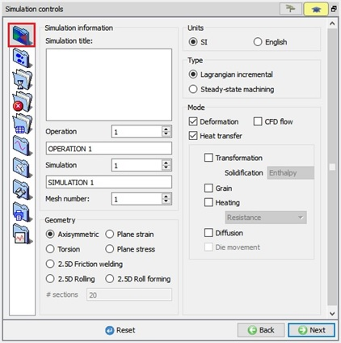
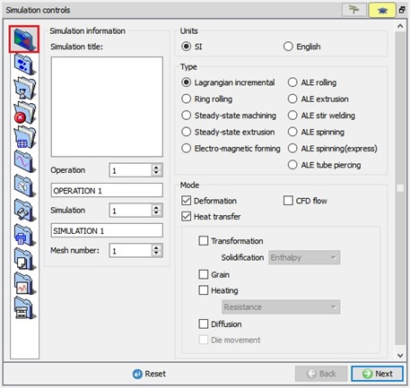

In Simulation Controls we can control the numerical behaviour of the solution. Main settings details with specifying the simulation title, unit system, geometry type, etc. Step and stopping controls are used to specify the time step, the total number of steps and the criteria used to terminate the simulation. Processing conditions like the environment temperature, convection coefficient can be specified under Processing conditions. Certain advanced features are explained in the Advanced controls section.

(a)

(b)
Simulation controls Main window;(a) For 2D and (b) For 3D
Related Topics:
9.9. Thermomechanical variables
15. Movement Controls Definitions
18. Advanced Object Data Definition
20. Inter-object Data Definition
2D MO Basic Labs
3D MO Basic Labs
Appendix XIV: Rotating Workpiece Simulations
Setting up 3D machining models
Appendix XVI: Adding Gas Trap Calculation to a Simulation
Setting up induction heating in 2D
Appendix III: Running DEFORM in text mode